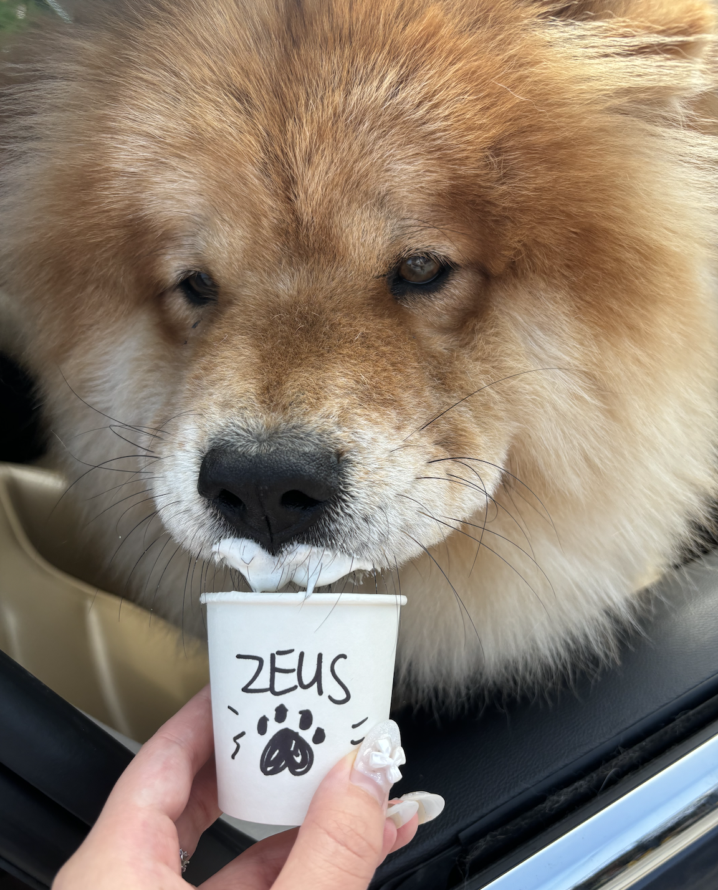

Sophia's Awesome Map and Etc.



(Map Title) Sophia's Favorite Outdoor Study Spots at UCLA!
About Me: Hello! I'm Sophia Nguyen, a graduating Asian American Studies major! My primary goal as a critical digital map maker is to work with and center community. As I've engaged with the academy, I've strived to question who the academy serves. I've never engaged with mapping or GIS before, but I'm excited to see how I can utilize this questioning (and do some answering) to work towards a more ethical world of GIS!
A list of things I like, in no particular order:
- my dog Zeus! (re: the photo, but not the patrick one)
- baking bread
- reading sci-fi and fantasy books!
- writing creative non-fiction and other essays (not well, but i write it)
- probably a handful of other things too...